Current Research
I study the upper atmospheres of exoplanets, with a focus on how stellar radiation and atmospheric composition drive atmospheric escape. I am particularly interested in helium and hydrogen spectral lines, which allow us to observe atmospheric outflows during planetary transits.
Current Project: Comparative Atmospheric Escape Across Four Exoplanets
I am currently extending my atmospheric escape model to a comparative study of four planets: HD 189733b, HD 209458b, HD 149026b, and GJ 1214b. This project uses the same multi-species hydrodynamic framework to compute the temperature–velocity structure of each atmosphere and to predict the He I 10830 Å transit signal, placing the planets on a common footing. Read more in our paper in the Astrophysical Journal below!
Together, these models show how mass-loss rates and helium absorption depend on stellar irradiation, planetary gravity, and atmospheric composition—from strongly escaping hot Jupiters to a warm, likely metal- and molecule-rich sub-Neptune.
HD 189733b
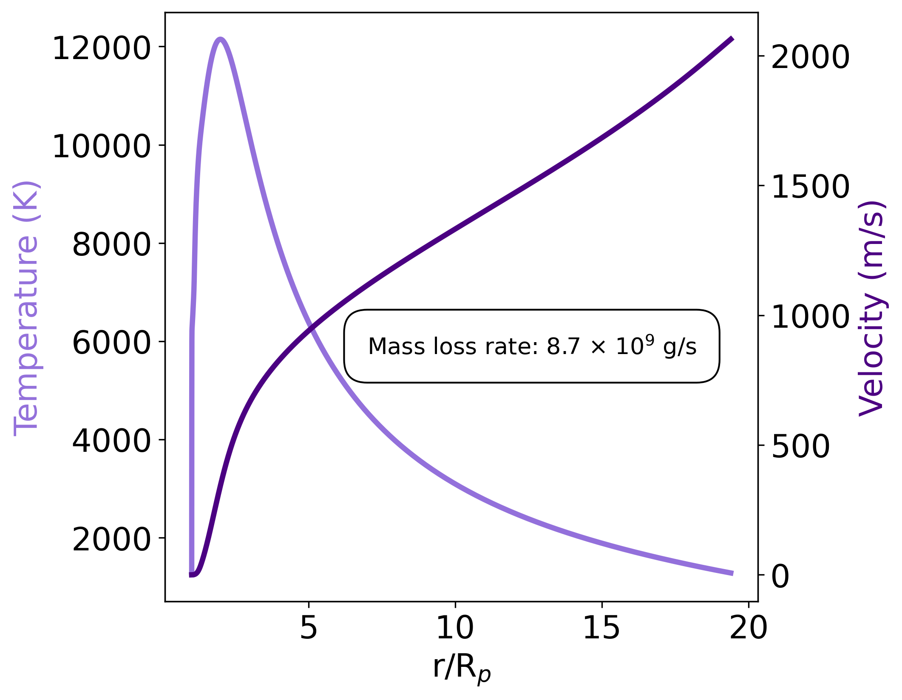
Hydrodynamic structure: temperature and velocity vs. radius.
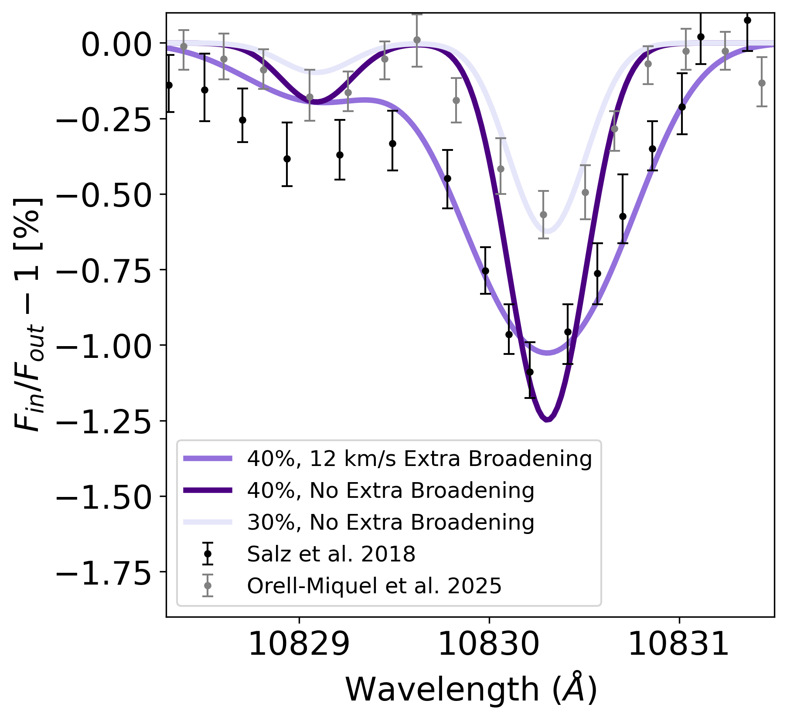
Modeled He I transit spectrum compared to observations.
HD 209458b
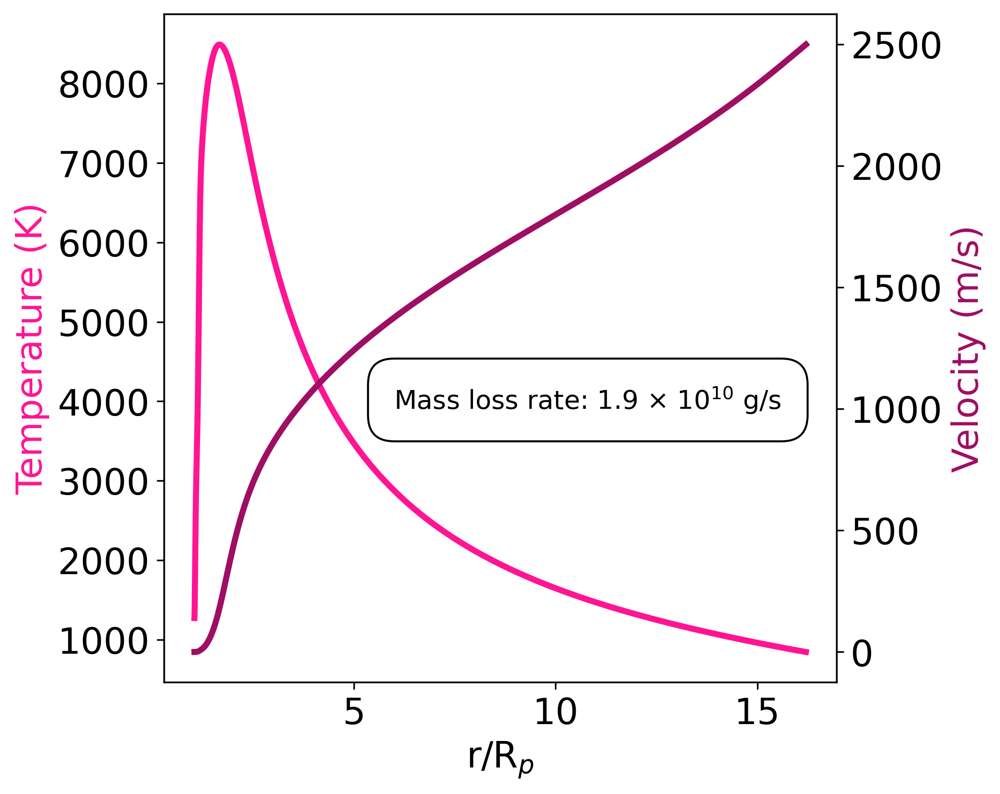
Hydrodynamic structure and mass-loss rate for HD 209458b.
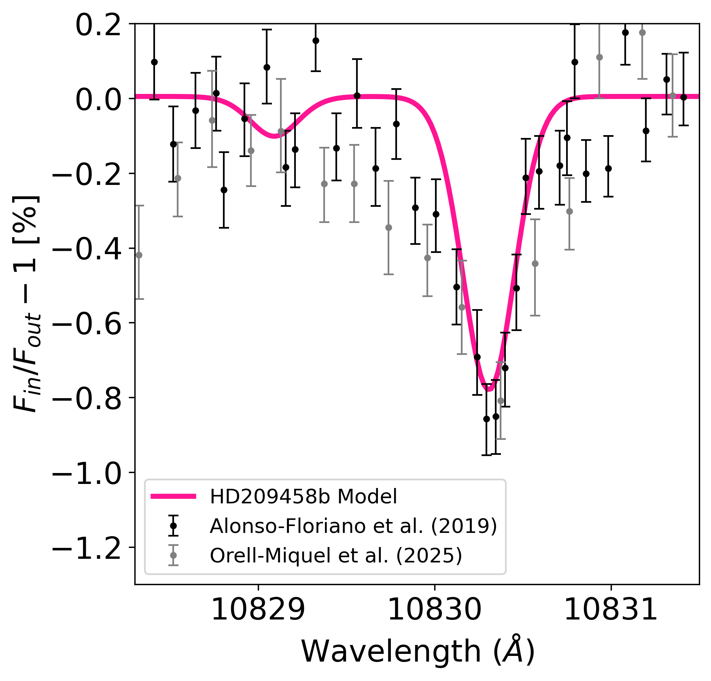
He I transit spectrum and comparison to multiple data sets.
HD 149026b
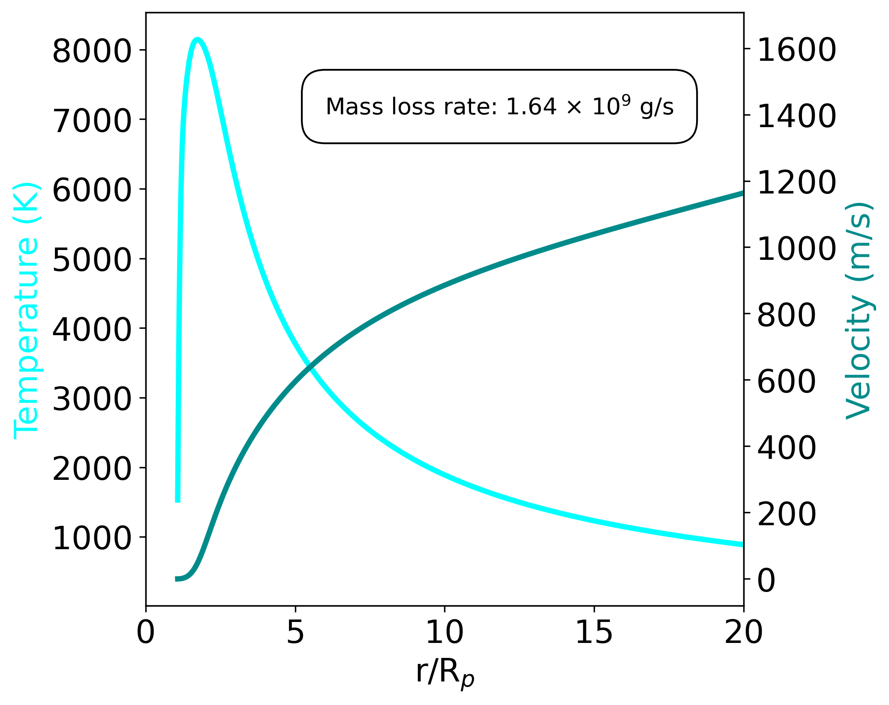
Hydrodynamic structure for the metal-rich hot Saturn HD 149026b.
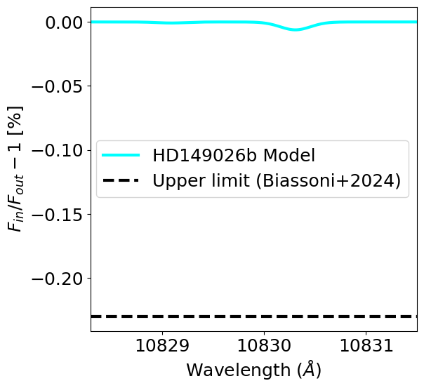
Predicted He I absorption and comparison with current upper limits.
GJ 1214b
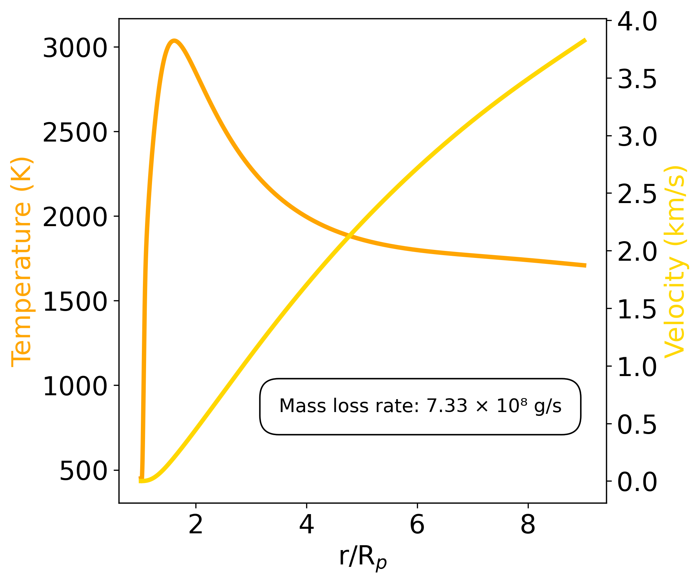
Hydrodynamic structure for the warm sub-Neptune GJ 1214b.
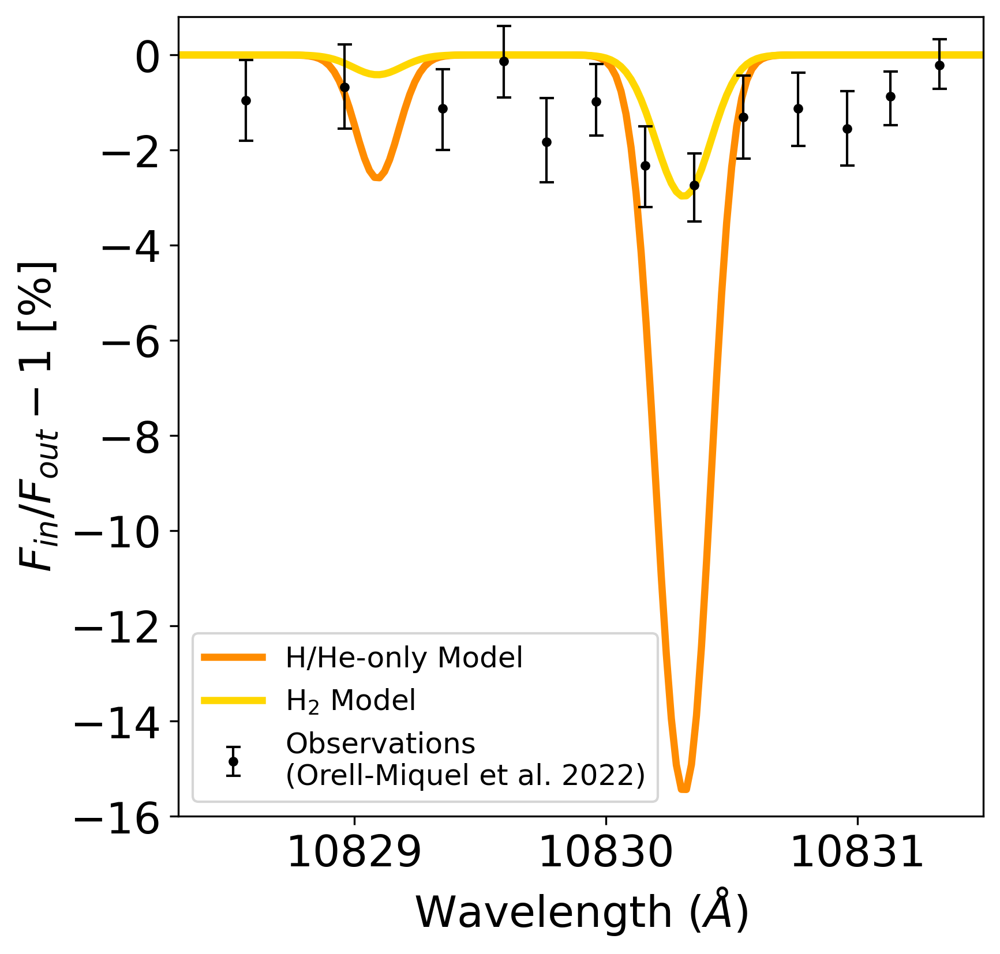
Predicted He I transit signal for a molecule- and metal-rich atmosphere.
HD 209458b: A Multi-Species Atmospheric Escape Model
My recent work, published in The Astrophysical Journal, presents a self-consistent model of HD 209458b’s atmosphere. We couple a time-dependent, multi-species hydrodynamic escape code to a photochemical model of the lower and middle atmosphere, and update key atomic processes for excited hydrogen and helium.
We explore how the observed helium and hydrogen absorption signals vary with stellar activity, eddy diffusion, and metallicity. Our results demonstrate that metastable helium responds differently to these parameters than hydrogen, highlighting the power of combining multiple spectral lines to constrain atmospheric escape.
📄 Read the full paper here.
Model Predictions for Metastable Helium
Below are example outputs from our model showing how the predicted metastable helium transit depths vary across a range of conditions. Each plot shows results for one parameter variation: increasing stellar activity, changing vertical mixing (eddy diffusion), and the inclusion of metals in the upper atmosphere.
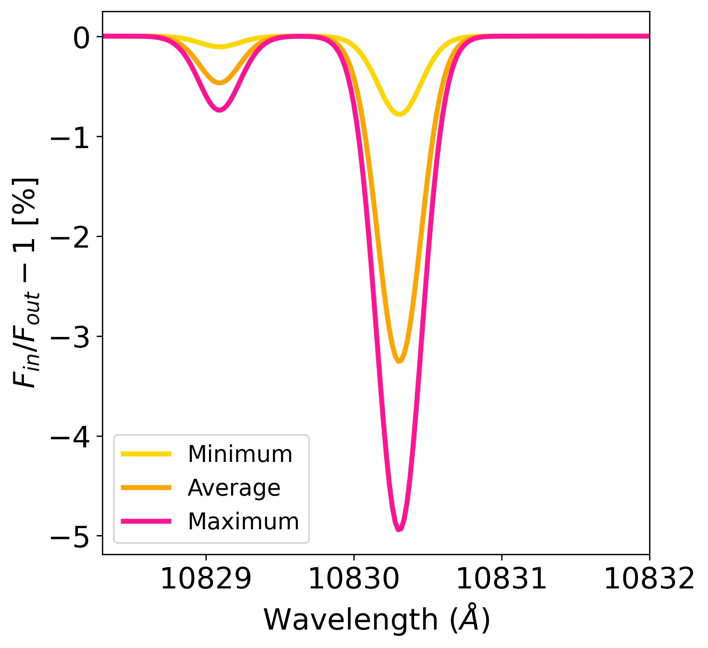
Variation with stellar activity
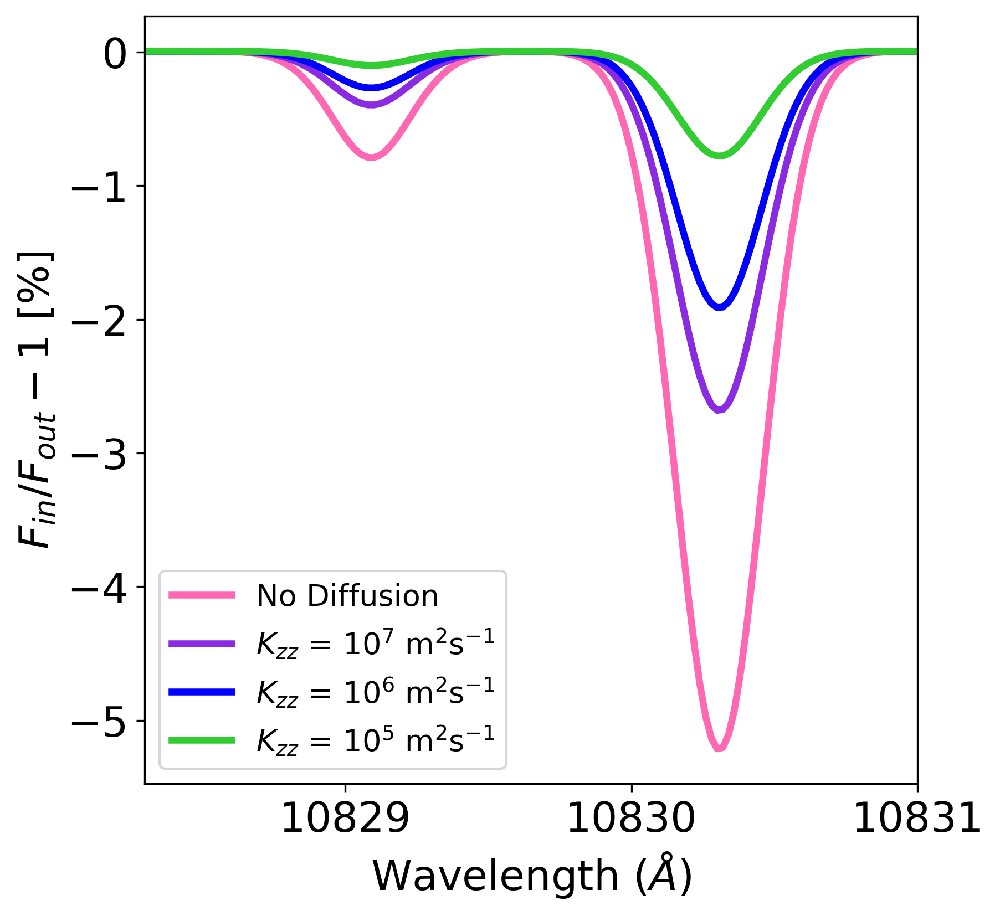
Variation with eddy diffusion
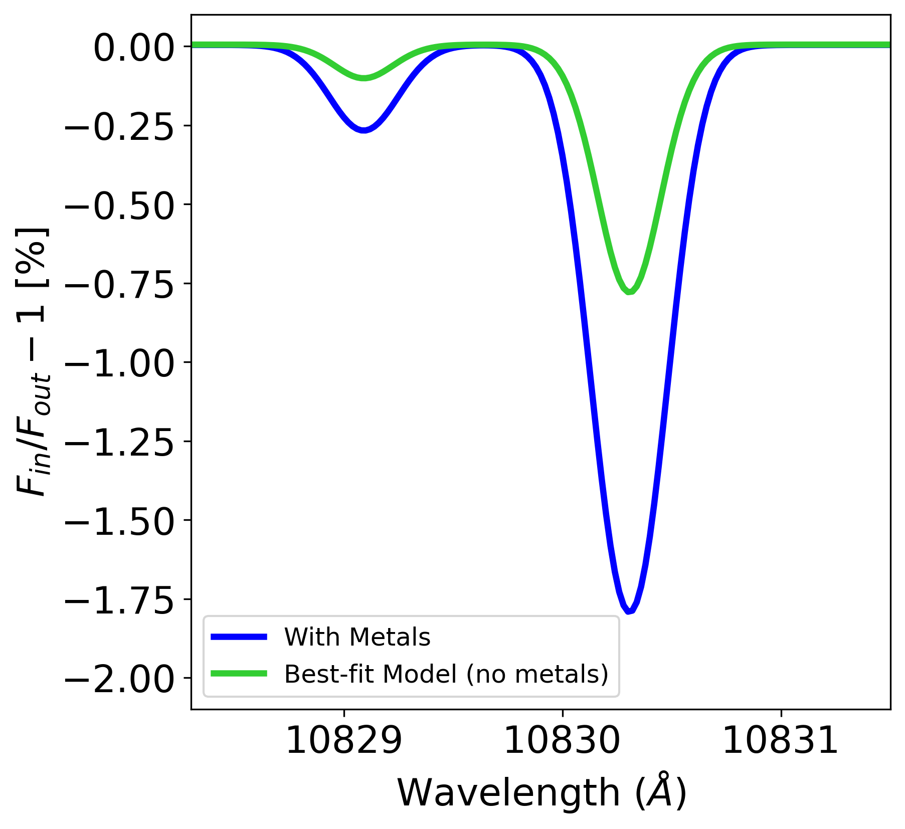
Effect of including metals